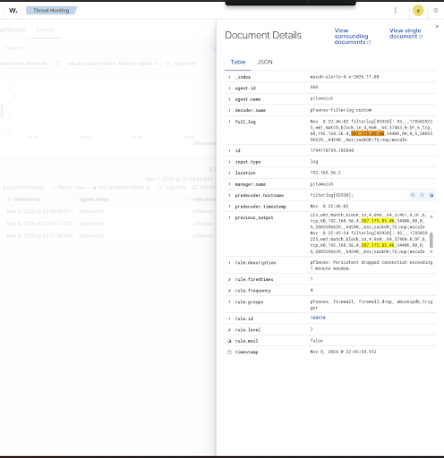
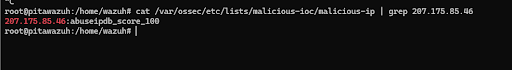

Perimeter & Detection Engineering
Stateful Telemetry & Threat Intelligence Loop
A segmented enterprise lab combining pfSense stateful firewall inspection, Samba Active Directory identity telemetry, and an automated threat intelligence loop.
-
BSD filterlog Parsing (OS_Regex) Engineered custom parent/child decoders in Wazuh, resolving complex RFC-5424 header mismatches to cleanly extract IPs and ports across TCP/UDP/ICMP.
-
Stateful Timeframe Correlation Configured 60-second correlation windows to filter background noise, triggering threat intel API queries only on persistent adversary scans.
-
Dynamic CDB Compilation Automated Python integration that queries AbuseIPDB, appends confirmed threats (>20% score), and instantly compiles binary .cdb lists in memory.
-
Bi-Directional Feed Blocking Deployed Level 12 SIEM rules to instantly isolate inbound attacks from verified actors or internal endpoints attempting outbound C2 communication.
flowchart TD
Kali["pitakli
(Kali Attacker)"] subgraph Perimeter ["Perimeter & Identity"] pfSense["pitasense (pfSense)
Table: wazuh_blacklist"] DC["dcpita (Samba AD-DC)"] end subgraph Detection ["SIEM & Threat Intel"] WAZ["pitawazuh
Wazuh Manager"] Abuse["AbuseIPDB API
Confidence >20%"] CDB[("malicious-ip
CDB Binary")] end Kali -.->|"Drops & Scans"| pfSense Kali -.->|"Kerberos & SMB"| DC pfSense -->|"BSD Syslog (514)"| WAZ DC -.->|"Agent Logs"| WAZ WAZ -->|"Session >60s"| Abuse Abuse -->|"Auto-Compile"| CDB CDB -->|"pfctl Table Sync"| pfSense classDef srv fill:#1e293b,stroke:#38bdf8,stroke-width:1.5px,color:#fff; classDef sec fill:#0f172a,stroke:#f43f5e,stroke-width:1.5px,color:#fff; class Kali,pfSense sec; class DC,WAZ,Abuse,CDB srv;
(Kali Attacker)"] subgraph Perimeter ["Perimeter & Identity"] pfSense["pitasense (pfSense)
Table: wazuh_blacklist"] DC["dcpita (Samba AD-DC)"] end subgraph Detection ["SIEM & Threat Intel"] WAZ["pitawazuh
Wazuh Manager"] Abuse["AbuseIPDB API
Confidence >20%"] CDB[("malicious-ip
CDB Binary")] end Kali -.->|"Drops & Scans"| pfSense Kali -.->|"Kerberos & SMB"| DC pfSense -->|"BSD Syslog (514)"| WAZ DC -.->|"Agent Logs"| WAZ WAZ -->|"Session >60s"| Abuse Abuse -->|"Auto-Compile"| CDB CDB -->|"pfctl Table Sync"| pfSense classDef srv fill:#1e293b,stroke:#38bdf8,stroke-width:1.5px,color:#fff; classDef sec fill:#0f172a,stroke:#f43f5e,stroke-width:1.5px,color:#fff; class Kali,pfSense sec; class DC,WAZ,Abuse,CDB srv;
Live Execution Telemetry

